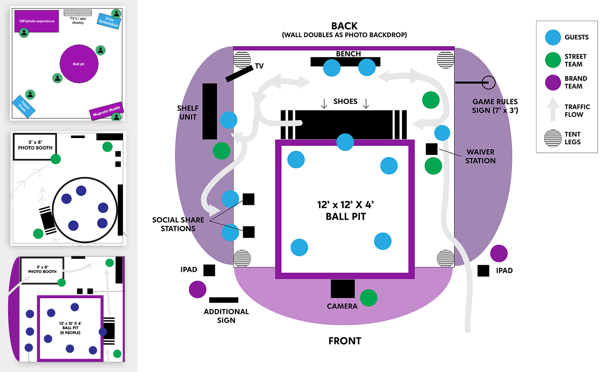
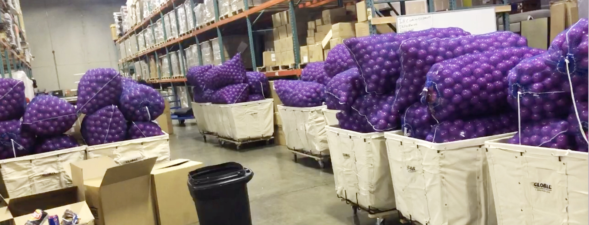
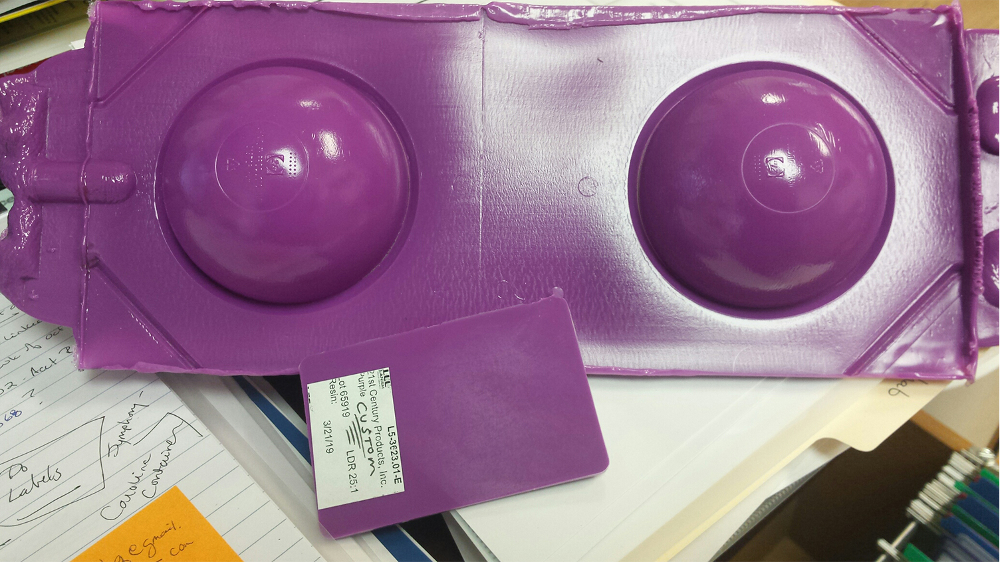

案例发生了什么
Zulily 成为 Seattle Sounders FC 与 Reign FC 球衣合作伙伴后，在 CenturyLink Field 赛前球迷区搭建了一座约 12×12×4 英尺的巨型紫色球池，内部放入约 30,000 颗品牌紫色球和 100 颗白球。参与者只有两分钟寻找白球并兑换奖品；现场同时拍摄 GIF 与慢动作内容，方便以 #zulilyzone 分享。Zulily 的品牌概念 Thrill of the Find 原本描述电商“发现好物”的心理，这次被翻译成一个任何人站在远处都能看懂的身体寻宝游戏。
真实执行素材
以下图片来自权利方、球队、品牌、制作方或奖项原档；按执行链完整度灵活收录，不限制固定张数，逐图保留主源链接。




CASE TAKEAWAY
案例启示
关键动作
- 把品牌紫铺满整个装置，先用巨大色块从拥挤球迷区中建立可见度。
- 用 30,000 比 100 的稀缺比例和两分钟倒计时制造明确悬念。
- 在参与过程中同步拍摄 GIF 与慢动作，把一次线下寻找变成可带走的个人内容。
传播与商业机制
定位动作化
“发现的惊喜”不再是广告语，而是钻进球池寻找稀缺白球。
巨大色块引流
品牌紫球池本身就是远距离可见的入口与拍照背景。
稀缺与倒计时
有限白球和有限时间让参与者与围观者同时获得悬念。
可复用的方法把品牌的一句核心承诺改写成一个有颜色、有数量差、有时间限制的身体任务，确保远看有冲击、近看能参与。
适用条件与风险
- 球池需要控制清洁、跌倒、拥挤、儿童参与和随身物品遗失等运营风险。
- 原制作人项目页目前访问不稳定，本站保存了网页存档作为证据留存；合作身份仍应回到球队或品牌公告复核。
SOURCE & EVIDENCE LEDGER
官方资料与原始来源
Kim Arispe2019 · Zulily Brand Activation打开原始来源 ↗
Internet Archive2024-04-23 存档 · Zulily Brand Activation archived page打开原始来源 ↗
来源备注图片取自创意负责人项目页的网页存档，非生成图；页面中的执行规模属于项目方记录。